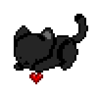

ONE CAT / EVERY TAB
Same little spot.
Different page.
Drag Mochi once and the position is remembered across eligible tabs and viewport sizes. Your companion keeps its corner while the internet changes underneath it.
Make space for a little company.
Mochi stays quietly in the corner while you browse, work, or watch.
Mochi stays here
Tab onesame position
Your little corner
comes with you.
Switch tabs without losing the cat, the mood, or the placement.
still here :3Tab twosame position